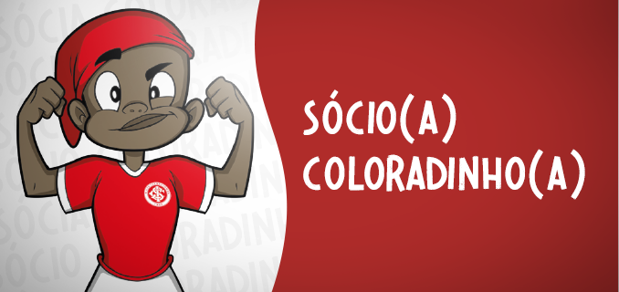
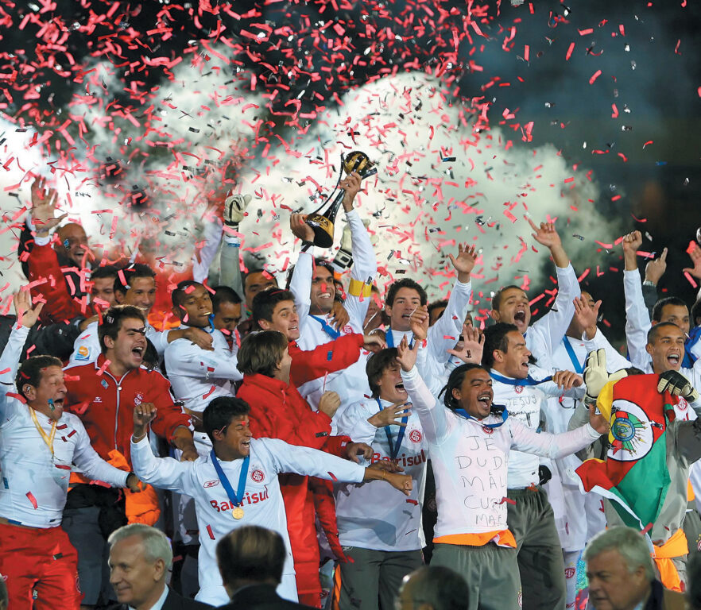

História do Gigante da Beira Rio
Estádio José Pinheiro Borda, mais conhecido como Beira-Rio, ou carinhosamente como Gigante da Beira-Rio, é um estádio de futebol localizado às margens do lago Guaíba na cidade de Porto Alegre, Brasil. Pertence ao Sport Club Internacional e sua capacidade é para 50 982 torcedores, sendo o 10.º maior estádio do Brasil. O Beira-Rio foi inaugurado oficialmente em 6 de abril de 1969, numa partida amistosa entre a equipe do Internacional e o Benfica, de Portugal, para um público de mais de 100 mil pessoas. O jogo acabou em 2 a 1 para o time brasileiro, uma vitória histórica contra uma das melhores equipes da época, e que contava, entre outros craques, com Eusébio.
Tipos de Sócios
- 
- 